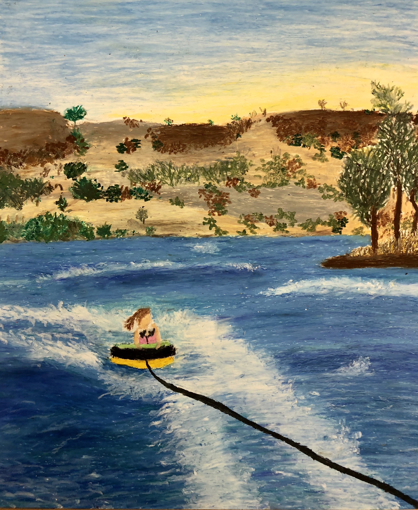

Oil Pastel Picture

This project was focused on capturing a perfect memory in time. The main objective was to get the audience to feel as if they were in the image. With the use of oil pastels this image was able to come to life. The color scheme represents nature and works well to tell a story. The texture on the water and background makes the scene visually appealing. The story comes together in this piece to tell one of a girl having the best summer day on the lake just as the sun is about to set.